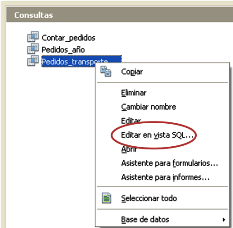
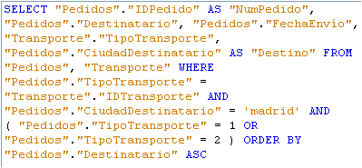
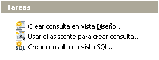
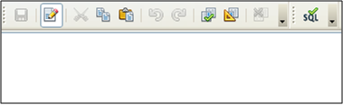

5. Lengua SQL
Importante
|
 |
Las consultas diseñadas en los SGBD son implementaciones del lenguaje SQL. De hecho, desde cualquier consulta en OOo Base se puede acceder a su vista en SQL haciendo clic en botón derecho. |
|
En la siguiente imagen se muestra la vista SQL de una consulta realizada en OOo Base. La apariencia es la de un texto con expresiones y nombres de campos y tablas de la base de datos. Por eso, el diseño consultas en SQL requiere un conocimiento avanzado de sus elementos y su sintaxis. |
|
|
Esta es la traducción que hace OOo Base de una consulta y este es el formato elegido para distinguir rápidamente los elementos de SQL. |
Vista SQL  |
Comprueba lo aprendido
| En OOo Base, el panel de tareas con consultas permite crear una consulta directamente en vista SQL. |

Tareas de creación de consultas
|
| La pantalla que aparece es un editor de texto en blanco. Para crear una consulta es necesario conocer la sintaxis y las sentencias SQL. |
 Editor de consultas en SQL |
Para saber más
Observa que en el nombre de varios de los Sistemas de gestión de Bases de datos relacionales que hemos visto se repiten las siglas SQL, que hacen referencia al lenguaje de consultas estructurado (Structured Query Language).
El uso de este lenguaje es una de las mayores ventajas de las bases de datos relacionales, puesto que posibilita el acceso a los datos para obtener informes o actualizar datos de forma sencilla y eficaz.